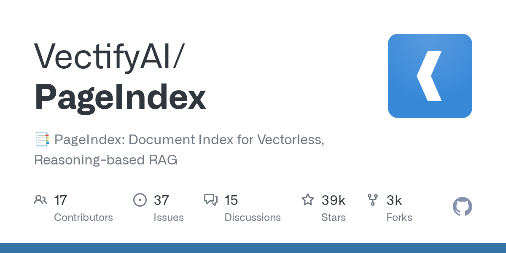

07 GitHub
VectifyAI/PageIndex
FinanceBench 98.7%를 내세운 벡터 없는 문서 검색
★ 38,937이번 주 +1,549PythonMIT 사내 사용 가능릴리스 v0.2.21 (10.01)최근 활동 10.07테스트 있음예제 있음AGENTS.md 없음

VectifyAI/PageIndex는 Python으로 만든 문서 색인 도구다. 벡터를 쓰지 않고 문서를 트리 형태로 색인한 뒤, 모델의 추론으로 필요한 부분을 찾는 RAG 방식을 쓴다. 한 컴퓨터에서 도는 로컬 모드와 색인·저장을 맡기는 PageIndex Cloud 중에서 고른다. 인용 안내에는 2025년 9월에 올린 만든 쪽 블로그 글이 소개 자료로 적혀 있다.
무엇을 하는 물건인가
VectifyAI/PageIndex는 긴 PDF 문서에서 질문에 맞는 부분을 찾아 모델이 답하게 해 주는 도구다. 목차를 펼쳐 관련 장만 골라 읽듯 문서 구조를 따라 필요한 대목에 접근한다. 이 도구가 없으면 질문마다 PDF 전체를 모델에 넘겨야 한다.
스펙과 도입 조건
- 언어: Python으로 작성했다.
- 설치 형태: PageIndex SDK의 PageIndexClient로 문서 등록, 채팅, 에이전트 도구 연동을 처리한다. 로컬 모드와 클라우드 모드가 같은 클라이언트를 쓴다.
- 의존 서비스: 로컬 모드는 서버, 벡터 DBvector database — 글을 숫자 묶음으로 바꿔 저장하고 표현이 비슷한 글을 찾아 주는 데이터베이스, PageIndex API 키가 필요 없다고 한다. 노드 요약은 LLM이 쓰는데 필요한 모델 제공자 키는 적혀 있지 않다. 클라우드 예시는 PageIndex 키와 OpenAI 키를 환경 변수로 쓴다.
- 처리 범위: 로컬은 텍스트 기반 PDF를 쪽 단위 인용으로 처리한다. 스캔·이미지 문서의 OCROptical Character Recognition — 스캔본이나 이미지 속 글자를 텍스트로 읽어 내는 기술, 블록 단위 인용, 메타데이터, 폴더, MCP 서버는 클라우드에서만 지원한다.
- 라이선스: MIT다.
- 성숙도: 최신 릴리스는 v0.2.21(2026년 10월 1일)이다. 저장소에 테스트와 예제가 있다.
이럴 때 쓰면 좋다
- 수백 쪽짜리 사업보고서에서 2023년 영업이익률 같은 수치 조회 질문에 쪽 단위 근거를 붙여 답하게 하는 시험에 쓴다.
- 내부 규정집 PDF에서 관련 조항을 찾아 쪽 번호를 붙여 보여 주는 규정 문서 검색 PoC에 쓴다.
- 스캔본 계약서처럼 이미지로 된 문서는 로컬에서 처리되지 않으므로, 비식별 샘플로 클라우드 모드의 OCR 품질을 확인한다.
핵심 기능
- Flash 엔진 색인: 레이아웃 통계로 문서 구조 트리를 만들어 구조 생성에는 LLM을 쓰지 않고, LLM은 노드 요약만 쓴다. 노드 확장은 여러 노드를 동시에 처리한다.
- 하나의 클라이언트: 문서 등록, 트리 조회, 쪽 내용 조회, 채팅, 에이전트 도구가 로컬과 클라우드에서 똑같이 있어 코드를 바꾸지 않고 옮길 수 있다.
- 클라우드 문서와 자체 모델: 문서는 PageIndex Cloud에 두고 질의응답은 사용자가 지정한 채팅 모델이 맡는다.
대안 대비 차별점
PageIndex는 벡터 검색 없이 문서 트리를 따라 모델이 읽을 부분을 추론해 고른다. 추론이 닿은 노드만 읽으므로 질문당 비용이 문서 길이에 따라 늘지 않는다고 만든 쪽은 밝혔다. 로컬 모드에서는 서버, 벡터 DB, PageIndex API 키가 필요 없다. 다만 노드 요약에 쓰는 LLM의 제공자 키는 적혀 있지 않다.
만든 쪽은 금융 문서 질의응답 벤치마크benchmark — 같은 문제로 도구의 성능을 재는 시험이며, FinanceBench는 금융 문서 질의응답용이다 FinanceBench에서 정확도 98.7%로 벡터 기반 RAGRetrieval-Augmented Generation — 질문과 관련된 문서 조각을 먼저 찾아 모델에 넣어 주고 그 내용으로 답하게 하는 방식를 크게 앞섰다고 밝혔다. 벡터 방식의 수치와 독립 평가 여부는 적혀 있지 않다.
PageIndex-OSS-Benchmark는 로컬 모드, Flash 색인, OCR 없음 설정으로 쿼리 비용과 정확도를 잰다. 질문은 MMLongBench-Doc-V2에서 뽑은 PDF 34개(1,945쪽)의 조회형 62개다. 정답이 본문에 적힌 사실이라 오답은 검색이나 읽기의 실패를 뜻하고 추론 실패는 아니다. 같은 로컬 환경에서 9쪽부터 1,098쪽까지 벤치마크 문서의 색인은 약 13초에서 4.5분이 걸렸다.
PDF 전체를 모델에 넘기는 방식과 비교한 비용은 아래 표와 같다. 두 방식이 같은 답을 낸 문서만 비교했고, gpt-5.6-sol 기준이며 프롬프트 캐싱은 제외했다. 비교가 가능한 두 구간 모두 PageIndex가 싸고 문서가 길수록 격차가 벌어진다. 가장 긴 구간에서는 통째 입력이 컨텍스트 창context window — 모델이 한 번에 읽을 수 있는 입력의 최대 분량에 들어가지 않아 비교 자체가 안 된다.
로컬과 클라우드의 차이는 처리 범위다. 클라우드는 스캔·이미지 문서를 OCR로 읽고 블록 단위 인용, 메타데이터, 폴더, MCP 서버를 지원한다. 문서 전체 묶음을 추론 대상으로 삼는 PageIndex File System도 클라우드 전용이다.
| 문서 분량 | PDF 통째 입력 비용(PageIndex 대비) | 비고 |
|---|---|---|
| 52쪽 | 2.1배 | gpt-5.6-sol 기준, 프롬프트 캐싱 제외 |
| 420쪽 | 16.6배 | gpt-5.6-sol 기준, 프롬프트 캐싱 제외 |
| 805쪽 | 비교 불가 | 문서가 컨텍스트 창에 들어가지 않음 |
사내 도입 체크
- 외부 API 호출: 노드 요약과 질의응답에 LLM을 쓰며, 클라우드 예시는 OpenAI 키를 쓴다. 로컬 모드에서 어떤 모델 제공자를 쓰는지는 확인 필요.
- 데이터 반출: 클라우드 모드는 색인과 저장을 PageIndex Cloud에서 하므로 문서가 외부에 올라간다. 클라우드 문서를 자체 모델로 질의하면 쪽 내용이 사용자 프로세스를 거쳐 모델 제공자로 전달된다고 적혀 있다. VPC나 온프레미스 전용 배포는 문의해야 하고, 로컬 모드의 외부 전송 범위는 확인 필요.
- 유지보수 주체: VectifyAI 계정이 저장소를 관리하고 저작권 표기는 PageIndex AI다. 클라우드 상품도 운영한다.
- 상용 대체: 대체할 상용 제품과 클라우드 요금은 적혀 있지 않아 확인 필요.
원문 정보
제목: VectifyAI/PageIndex
최근 활동: 2026.10.07